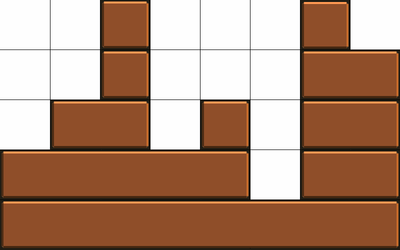

We define a block to be a rectangle with a height of $1$ and an integer-valued length. Let a castle be a configuration of stacked blocks.
Given a game grid that is $w$ units wide and $h$ units tall, a castle is generated according to the following rules:
The following is a sample castle for $w=8$ and $h=5$:

Let $F(w,h)$ represent the number of valid castles, given grid parameters $w$ and $h$.
For example, $F(4,2) = 10$, $F(13,10) = 3729050610636$, $F(10,13) = 37959702514$, and $F(100,100) \bmod 1\,000\,000\,007 = 841913936$.
Find $(F(10^{12},100) + F(10000,10000) + F(100,10^{12})) \bmod 1\,000\,000\,007$.
solve() → ?